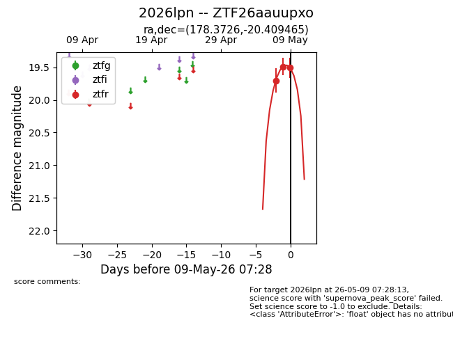
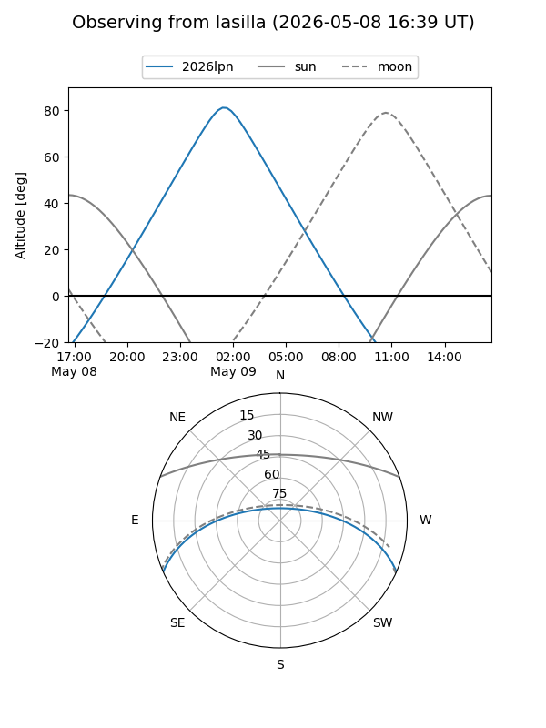
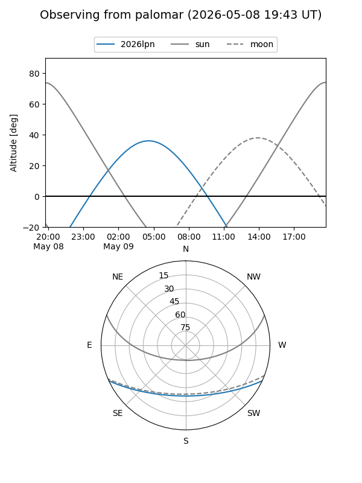
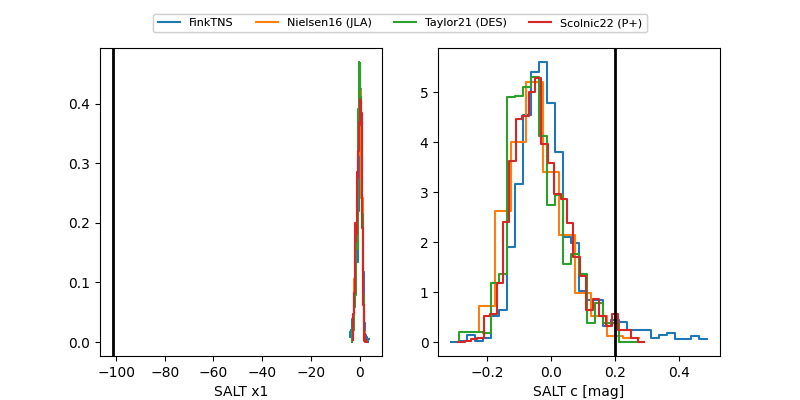

2026lpn
Target 2026lpn at 2026-05-09 07:29
Aliases and brokers:
FINK: link
Lasair: link
ALeRCE: link
TNS: link
YSE: link
alt names
ZTF26aauupxo (ztf,fink_ztf)
2026lpn (tns,yse)
Coordinates:
equatorial (ra, dec) = 178.3726,-20.40946
equatorial (HMS+DMS) = 11:53:29.43,-20:24:34.07
galactic (l, b) = (284.9915,+40.43493)
Flags:
Photometry:
last ztfr=19.51
3 ztfr detections
Lightcurve

Visibility


Additional plots
